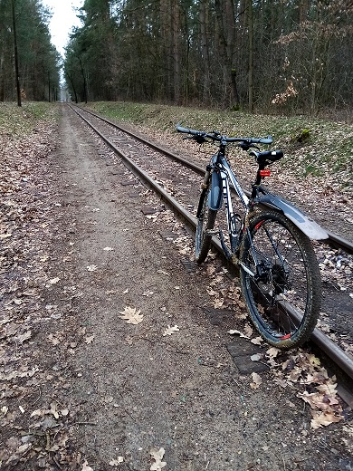

Jestem mężczyzną w tzw.: średnim wieku, który szuka inspiracji i pomyślał,
że zamiast zmieniać żonę na młodszą i kupować czerwony samochód (wiadomo jakiej marki)
zainteresuje się programowaniem stron internetowych.
Bo wiadomo: trzeba się rozwijać i uczyć nowych rzeczy.
A jako, że jestem człowiekiem wszelkich talentów i szereg zainteresowań różnorodnych posiadam
toteż otwarty jestem na nowe wyzwania (o ile mnie zaciekawią a z tym różnie może być).
A poza tym lubię jazdę na rowerze :)

Moja nauka frontendu (i przy okazji pierwsza strona)
Kim jestem?
Początki i pierwsze przemyślenia
Na razie ciekawostki ale ciekawe. Jako, że coś tam próbowałem tworzyć w VBA, to wygląda to mi
nawet
znajomo, oczywiście toutes proportions gardees bo realnie rzecz biorąc nic nie umiem (na razie).
Ale ciekawe jest już dowiedzieć się co jest pod spodem czyli jak się wyświetla to, co widzimy na
stronie.
Źle, że nie miałem więcej czasu na ten materiał ale teraz zamierzam przysiąść do tego bardziej –
wiedza!